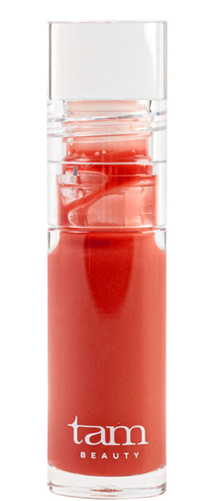
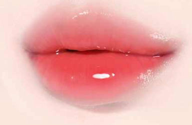
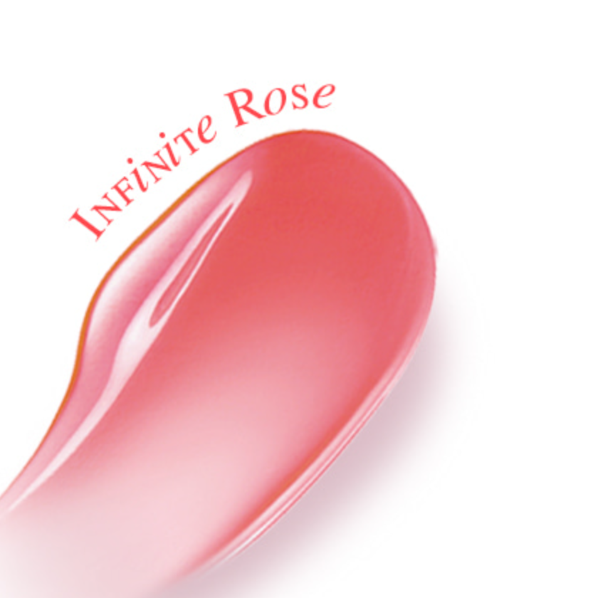
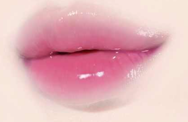
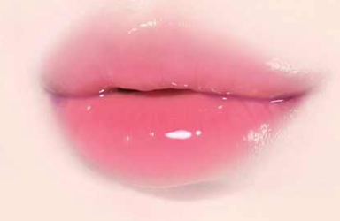
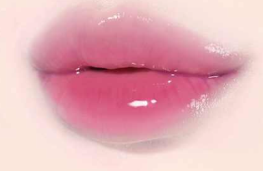
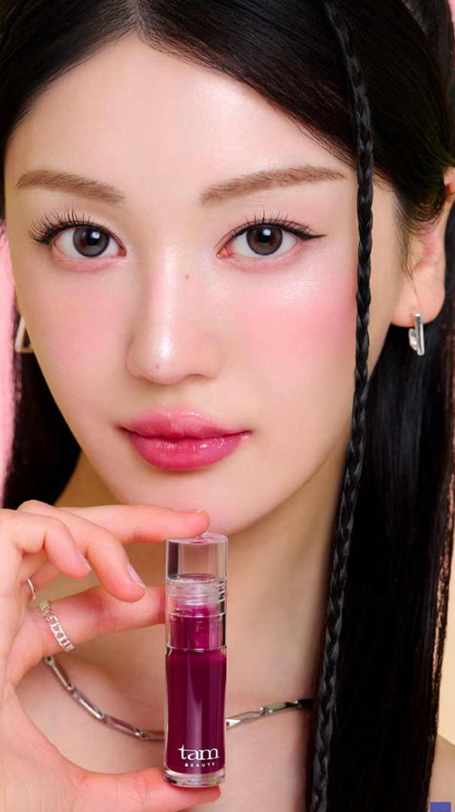

01 퍼스트 러브
FIRST LOVE

맑고 여린 벚꽃 핑크
더 젤리 플럼핑 립 오일
맑은 생기를 더하고,
촉촉하게 빛나는 립 오일.



THE JELLY PLUMPING LIP OIL
3 COLORS · 4.3 ml
은은하게 비치는 컬러와 반짝이는 광택.
내 입술에 생기를 한 겹 더해보세요.

02 인피니트 로즈 도포 이미지. 입술색과 사용량에 따라 발색이 다를 수 있습니다.
여린 핑크부터 장미빛, 맑은 퍼플까지.
원하는 분위기에 맞춰 골라보세요.
FIRST LOVE
맑고 여린 벚꽃 핑크
INFINITE ROSE


생기 있는 장미빛 로즈
NIGHT VIEW

맑게 감도는 퍼플
실제 발색은 본래 입술색, 도포량, 조명과 화면 설정에 따라 다를 수 있습니다.
가볍게 한 겹, 조금 더 선명하게 한 겹.
원하는 컬러와 광택을 직접 조절하세요.


입술색과 도포량에 따라 발색이 다를 수 있습니다.
넓은 빅 팁으로 입술을 감싸듯.
중앙부터 부드럽게 펴 발라주세요.

용기 입구에서 팁에 묻은 양을 조절하고,
필요한 부분에 조금씩 덧발라주세요.
반짝이는 립 메이크업에
촉촉한 사용감까지.
Sunflower Seed Oil
Camellia Sinensis Seed Oil
전성분에 기재된 오일 성분입니다.
쿨링감과 젤리광이 만나
볼륨감 있는 입술을 연출해보세요.

03 NIGHT VIEW
쿨링감 등 사용감에는 개인차가 있습니다.
사용 중 불편함이나 자극이 느껴지면 사용을 중단하세요.
용기 입구에서 가볍게 덜어내고
처음에는 소량으로 시작하세요.
입술 곡면을 따라 바깥쪽으로
부드럽게 펴 발라주세요.
단독으로 맑게, 립 컬러 위에 반짝이게.
필요한 부분에 소량씩 덧발라주세요.
오늘의 컬러 위에,
나만의 젤리광.
폴리부텐, 옥틸도데칸올, 해바라기씨오일, 녹차씨오일, 브이피/헥사데센코폴리머, 덱스트린팔미테이트, 카프릴릭/카프릭트라이글리세라이드, 실리카실릴레이트, 마이카, 멘틸락테이트, 토코페릴아세테이트, 에틸멘탄카복사마이드, 메틸다이아이소프로필프로피온아마이드, 펜타에리스리틸테트라-다이-t-부틸하이드록시하이드로신나메이트, 티타늄디옥사이드 (CI 77891), 적색104호의(1) (CI 45410), 적색201호 (CI 15850), 로즈마리잎추출물, 1,2-헥산다이올
폴리부텐, 옥틸도데칸올, 해바라기씨오일, 녹차씨오일, 브이피/헥사데센코폴리머, 덱스트린팔미테이트, 카프릴릭/카프릭트라이글리세라이드, 실리카실릴레이트, 마이카, 멘틸락테이트, 토코페릴아세테이트, 에틸멘탄카복사마이드, 메틸다이아이소프로필프로피온아마이드, 펜타에리스리틸테트라-다이-t-부틸하이드록시하이드로신나메이트, 티타늄디옥사이드 (CI 77891), 적색산화철 (CI 77491), 황색 5호 (CI 15985), 적색202호 (CI 15850:1), 흑색산화철 (CI 77499), 로즈마리잎추출물, 1,2-헥산다이올
폴리부텐, 옥틸도데칸올, 해바라기씨오일, 녹차씨오일, 브이피/헥사데센코폴리머, 덱스트린팔미테이트, 카프릴릭/카프릭트라이글리세라이드, 실리카실릴레이트, 마이카, 멘틸락테이트, 토코페릴아세테이트, 에틸멘탄카복사마이드, 메틸다이아이소프로필프로피온아마이드, 적색202호 (CI 15850:1), 펜타에리스리틸테트라-다이-t-부틸하이드록시하이드로신나메이트, 티타늄디옥사이드 (CI 77891), 청색 1호 (CI 42090), 로즈마리잎추출물, 1,2-헥산다이올